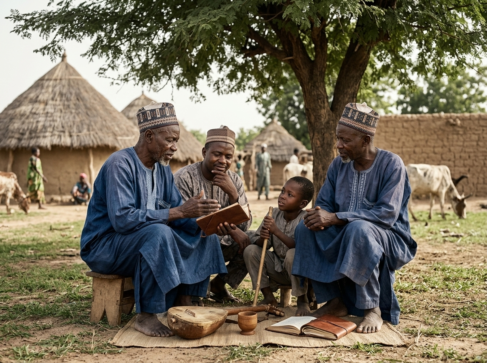

Elder
Community Elder
Interview and biography to be documented with consent.
Room 04 of the Archive
Every community carries knowledge that can disappear if it is not recorded. Wouro Yobi's memory lives in its people, places, photographs, stories, language and family histories. The Living Archive exists to preserve these memories and make them available to future generations.

Why Memory Matters
emory is not a category of old material sitting apart from present life. It is stories told by elders, family histories, the names given to places, the language spoken at home, photographs and documents, the milestones a community marks, and the knowledge quietly passed from one generation to the next.
It also includes what is harder to hold onto: changes in the landscape, the founding of schools and institutions, development initiatives, celebrations, difficult periods, and achievements. None of this is guaranteed to survive unless someone chooses to record it.
Understanding Our History
Wouro Yobi's history should be understood at several levels at once: Wouro Yobi itself, the wider Mayo-Darlé area, the Adamawa Region, the broader Mbororo/Fulani story, and the national history of Cameroon. None of these levels replaces the others — each gives context to the rest.
Community records specific to Wouro Yobi are being assembled. The Living Archive will continue to document this history through community testimony as elders, families and leaders contribute what they know. Where that documentation does not yet exist, this page says so plainly rather than filling the gap with assumption.
Not an Isolated Story
Wouro Yobi's story connects outward to wider historical, geographical, cultural and social developments. It is part of a larger regional and national story, not a village story told in isolation.
Context
Wouro Yobi is a Mbororo community, and Mbororo history — pastoral heritage, livestock, mobility, language, cultural identity, oral tradition, community organisation, and evolving relationships with land and neighbours — forms part of the wider context this archive draws on. Mbororo communities themselves are diverse: dialect, custom and degree of settlement vary across regions and even between neighbouring communities.
This diversity matters here specifically because it means broad Mbororo characteristics cannot be assumed to describe every person, or every practice, in Wouro Yobi automatically. Wherever this archive draws on that wider context, it is presented as context — not as a direct record of Wouro Yobi itself, unless separately confirmed.
Language
Fufude/Fulfulde — variant spellings of the same language — carries far more than everyday communication. Stories, names, expressions and cultural concepts are held in language, often transmitted only in speech, from one generation to the next. When a language stops being spoken between generations, that specific way of remembering can be lost with it.
This archive does not yet hold specific, verified examples of Wouro Yobi's own linguistic expressions, place names or oral formulas. Where these are gathered and confirmed, they will be added here with clear attribution — never invented to fill space.
Held in speech: names, expressions, oral knowledge, family history and the relationships between generations.
Timeline Journey
No dates are invented here. Each stop is labelled by what kind of evidence stands behind it today, so the timeline can grow honestly as real material is confirmed.
Pastoral tradition across the wider region, established long before written record.
How and when Wouro Yobi came to be is not yet recorded here.
Elder accounts of the community's early years are still to be gathered.
Regional administrative and historical developments, documented through public sources.
Significant moments in Wouro Yobi's own history await confirmation.
The Kindergarten Expansion is recorded in Our Future as work currently under way.
Traditional leadership is introduced in Our Identity.
Specific milestones for young people in the community are still to be recorded.
The Living Archive itself is being built, gathering and verifying evidence as it arrives.
What this page will hold once community testimony fills its open spaces.
The Archive's Building Blocks
Every memory in this archive eventually takes one of these forms. Select a card to explore what belongs to each.
Photographic Memory
Photographs can document people, places, buildings, celebrations, schools, agriculture, community events, leadership and a changing landscape — evidence that a written account alone cannot always carry. This gallery is a placeholder for that record.

Attribution mechanism: once photographs are uploaded, each will carry a visible credit line — photographer or contributing family, and licence where applicable — in place of the current "Source to be confirmed" label. Contextual (non-Wouro-Yobi) images will always be marked as such and never presented as photographs of this community.
Oral History
Some history exists primarily through people. These are placeholder structures for interviews not yet recorded — every quotation below will be replaced by a verified, attributed account, told with consent.
"An elder remembers…"
Placeholder for a recorded interview on early community life and what has changed.
"What should the next generation remember?"
Placeholder for a recorded interview on leadership and continuity.
"Growing up in Wouro Yobi…"
Placeholder for a recorded interview on household knowledge and daily life.
"What has changed?"
Placeholder for a recorded interview on growing up amid a changing community.
"What has changed in the classroom?"
Placeholder for a recorded interview on education over time.
"What should the next generation remember?"
Placeholder for a recorded interview on land and farming knowledge.
"An elder remembers…"
Placeholder for a recorded interview on livestock knowledge across generations.
"Growing up in Wouro Yobi…"
Placeholder for a recorded interview, open to any community member's account.
People Hold What Documents Cannot
People themselves are repositories of memory — often the only ones, for histories that were never written down. Where a verified profile already exists elsewhere in the archive, this section links to it rather than repeating it.
Elder
Interview and biography to be documented with consent.
Regional Advocacy
President, MBOSCUDA – Mayo-Banyo. Full profile on People.
View ProfileYounger Generation
Stories and names to be documented with consent.
Geography and Memory
Land, buildings and gathering spaces hold community memory even without a document to explain them. Where a place's significance has not yet been documented, it is presented here as an item awaiting community testimony, not a settled fact.

Coexistence
Wouro Yobi's memory does not exist in isolation from its neighbours. Trade, education, markets, farming, pastoralism, friendships and community events connect households across the wider area, and the memories tied to those shared spaces belong to more than one community at once.
This archive does not invent the names of neighbouring ethnic communities. Where broader Cameroon-wide evidence on coexistence, dialogue and cooperation is referenced — for instance MBOSCUDA's documented work on farmer-grazer cooperation — it is identified clearly as broader context rather than a specific Wouro Yobi record.
Memory Keepers
Family history, food traditions, agriculture, household knowledge, language and children's upbringing are frequently carried and transmitted by women, alongside growing roles in enterprise and community participation. This is a well-documented pattern across Mbororo-Fulani communities generally.
No specific stories are attributed to individual women in Wouro Yobi here. This section is built so that real, named, consented profiles can be added as the archive's oral history work continues.
Looking Forward
Preserving memory is not only about looking backwards. Young people can interview elders, digitise old photographs, document places, record stories, help preserve language, photograph community events, and contribute directly to this archive — connecting the community's history with its future aspirations.
See Our FutureAdd to the Memory
An old photograph. A family story. A name. A place. A document. A memory. A story told by an elder. The Living Archive grows when people contribute what they know.
Explore the Wider History
External sources readers can independently verify. They support the broader regional and Mbororo/Fulani context referenced on this page — they are not evidence for Wouro Yobi-specific claims unless they explicitly document Wouro Yobi.
Continue Exploring
Our home exists to document the life, heritage and aspirations of Wouro Yobi from the perspective of its people. We preserve our history, celebrate our culture, record our progress and share our vision for the future — so that future generations, researchers, partners and the wider world can understand who we are and what we are building together.Editorial Mission — Wouro Yobi Living Archive